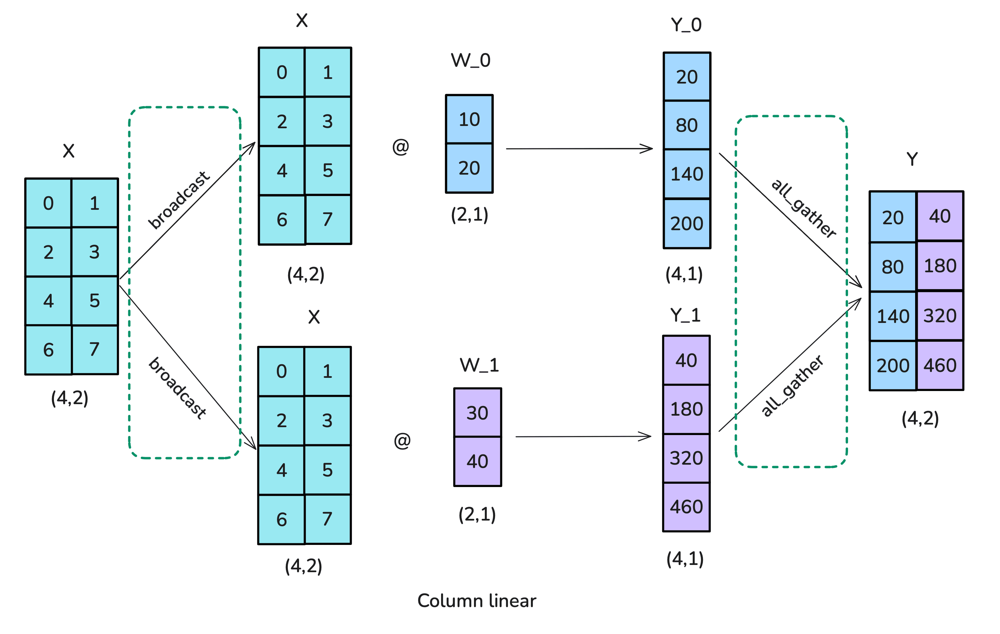
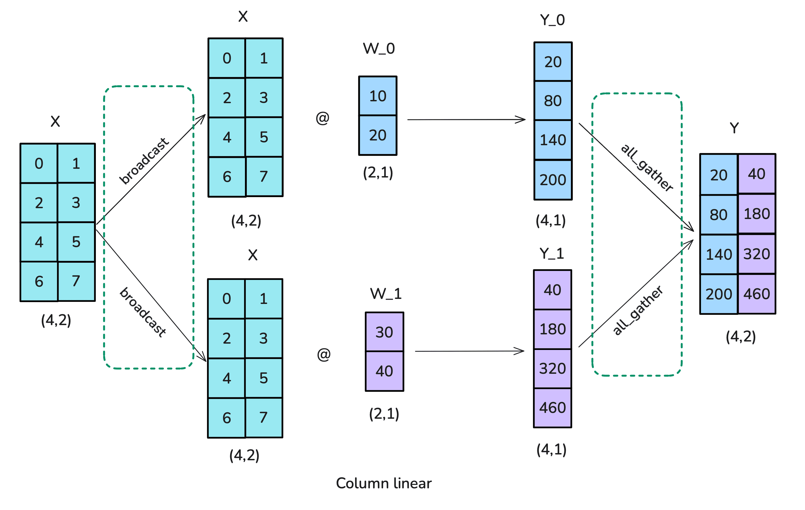

Model Parallelism
Data parallelism (DP)

Data parallelism (DP)

Image source: ultrascale
playbook
- Trivial to implement;
- Syncing overhead for training;
- Memory cost due to replication.
Overlapping in DP

Image source: ultrascale
playbook
- Overlapping reduces communication overhead.
Sharding in DP

Image source: ultrascale
playbook
- Sharding reduces memory usage;
- Three levels of sharding (optimizer, gradients,weights);
- ZeRO-methods / FSDP2.
Expert (MoE) parallelism

Image source: ultrascale
playbook
- Activate only subsets of experts per token;
- Similar to sharding, but reduce need for data exchange.
Tensor parallelism

Tensor parallelism
 

Image source: ultrascale
playbook
- row vs. column version;
- needs to be carefully designed;
Tensor parallelism (cont.)

Image source: ultrascale
playbook
- expensive communication;
- efficiency reduce with inter-node parallelization;
Pipeline parallelism (PP)

Pipeline parallelism (PP)


Image source: ultrascale
playbook
- Training: bubbling problem;
- Can be mitigated by smaller batch size (and accumulating the gradients);
Pipeline parallelism (cont.)

Image source: ultrascale
playbook
- More strategies exist;
- Balancing, bubble, memory and communication;
- Implement is not trivial.
Hybrid / 3D parallelism

Image source: ultrascale
playbook
- For really large models one need to combine the techniques;